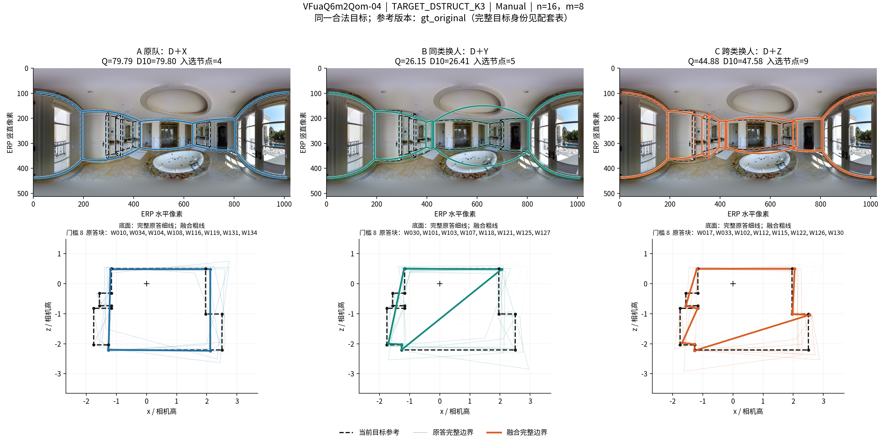
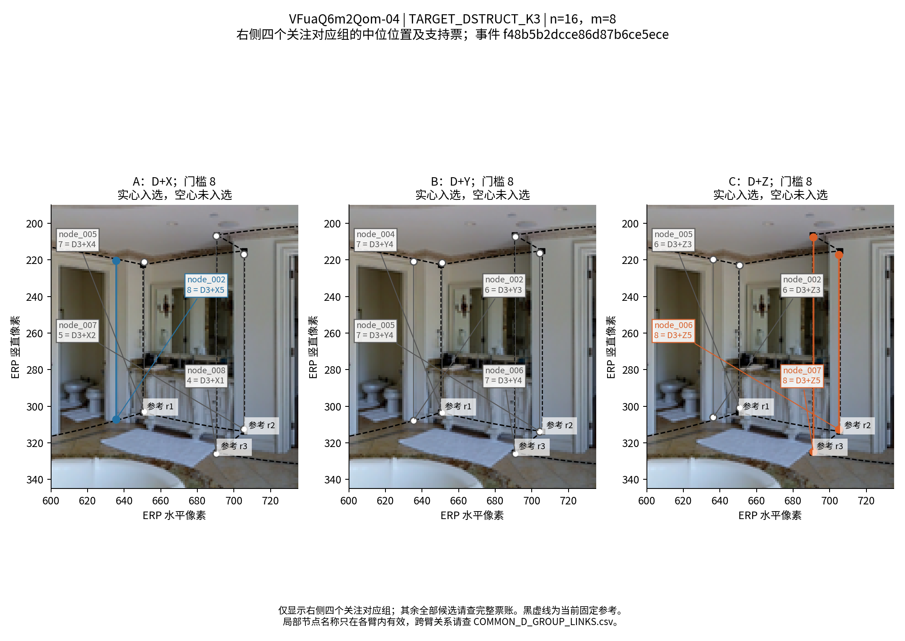
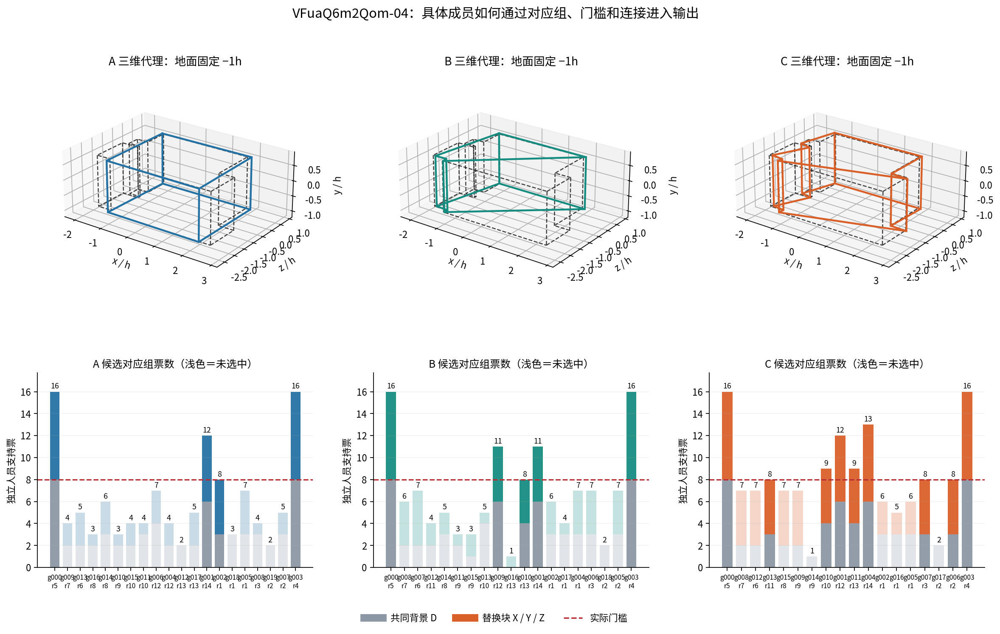
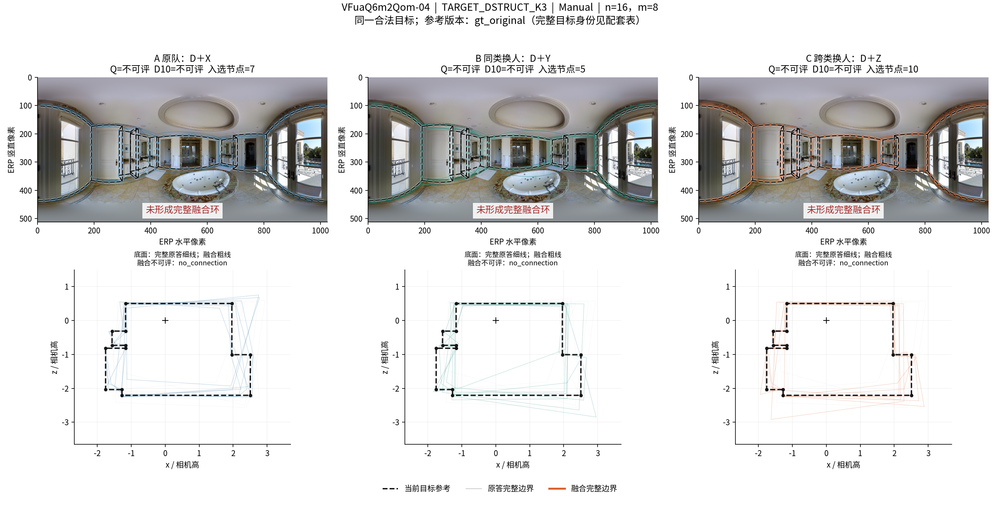
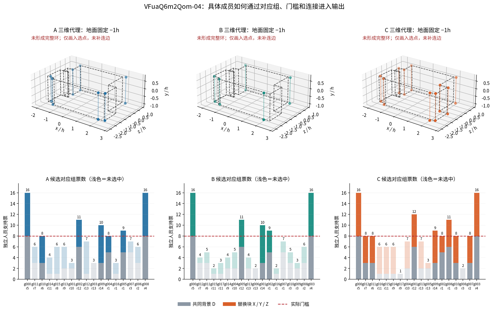

普通 Manual，n=16、m=8，困难转折倾向中间组→较多组。两法同实体团队；2套ABC、6个唯一端点，均为已完成实验。
完整中文说明 · 七池均值与多数比例 · 110组完整票账 · 原图
Q 79.7922 / 26.1511 / 44.8821。B−A −53.6411；C−A −34.9101；C−B +18.7310。角数4/5/9，部分细折入选而关键折点缺失，实际环形成长斜边。
事件 f48b5b2dcce86d87b6ce5ece · 原答及成员 · 共同D对应变化



入选角7/5/10，全部来源环覆盖数为0。A/B存在三组整体无共同支持者；C有互斥8票组同时入选。失败Q留空。
事件 cee80eb52074a9b2d594a037 · 原答及成员 · 共同D对应变化


范围与当前参考保持。人工可核对柜体遮挡下的墙地折线，以及右侧相邻对应组的真实结构含义。数值机制已由原答、几何和票账确定。